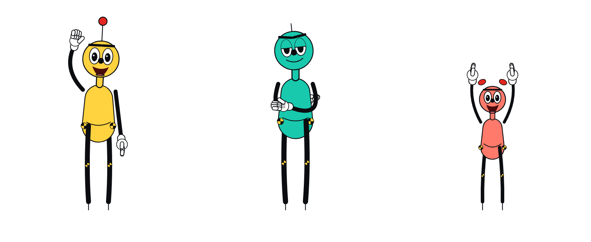

Bolas · department of dramaturgical crash testing
Crash Lab
Experiments in authored motion. Figures keyed by hand in a rig, measured like crash-test dummies, and set into archive film. Three dummies in a measured bay, a drawn cast in archive film, and a poet cut from paper.

Meet the family
Bola, Shim and little Dot
Three test dummies in a measured bay. The lead dummy. Bola takes the physical, opens the letter, misses the stair and walks into every archive clip in the atlas. Bola's partner. Shim holds the door, takes the hug, carries the heavy end and stands beside Bola in the screening room. Little Dot. She is lifted, carried and passed between the other two, and she runs under what they have to step over.
Programs
 The Crash-Test FamilyThree test dummies in a measured bay. Every touch, step and fall is scored for where the weight is, whether the feet hold and whether a hand lands where it was sent.
The Crash-Test FamilyThree test dummies in a measured bay. Every touch, step and fall is scored for where the weight is, whether the feet hold and whether a hand lands where it was sent. CINEOSISThe crash-test family performs the 45 signs of Deleuze's cinema books, after David Deamer's taxonomy: first in the measured bay, then inside real archive film, then by hand, and finally as a making-of with a blindfolded Critic.
CINEOSISThe crash-test family performs the 45 signs of Deleuze's cinema books, after David Deamer's taxonomy: first in the measured bay, then inside real archive film, then by hand, and finally as a making-of with a blindfolded Critic. The Found OdysseyHomer's lines are asked by the CALL track and answered by archive speech; a drawn cast acts in graded archive plates. Each episode runs one formal experiment.
The Found OdysseyHomer's lines are asked by the CALL track and answered by archive speech; a drawn cast acts in graded archive plates. Each episode runs one formal experiment. WYGWYLThe poet as a jointed paper cut-out made from his own photographs, set over the cineosis-lab cel cuts with the reading on the soundtrack. Every patch is built from the lab's cel database.
WYGWYLThe poet as a jointed paper cut-out made from his own photographs, set over the cineosis-lab cel cuts with the reading on the soundtrack. Every patch is built from the lab's cel database.Latest films
every film has its own page, logline, notes and running time
Poem 07Poem 07, all twelve patches, made by the automatic pipeline: gestures cued by the words, heads chosen by the rig, plates made from his photographs.
Episode 7 · THE LOOPBook 13 as a loop: seven agents try to land the sleeping man on Ithaca and fail, until a grip holds, Athena compiles, and the old beggar is put together part by part.
CINEOSIS · Hand ButterThe making-of, performed in a screening room by the film's own cast: Bola and Shim show their work, and a blindfolded Critic judges the pictures without knowing what was meant.
Crash Lab132 vignettes in a measured bay: letters opened, shoulders touched, doors pushed, stairs missed, and the 32 Acting Arena challenges, each scored for weight, feet, hands and contact.Process
the contact sheets and test frames checked while each piece was made